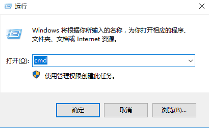
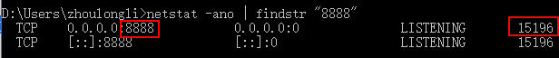
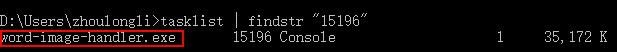
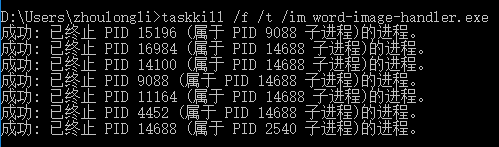

有了新版本后，会自动下载更新，可以选择现在更新或者关闭后再更新。
重启；如果不成功按F1查看，如果显示端口被占用，处理方式见问题3
3. 如果端口8888被占用怎么办？
四步关闭占用端口应用：
a. Win+R打开运行窗口，输入cmd，打开命令行窗口

b. 输入： netstat -ano | findstr "8888" , 查得占用端口应用的PID

c. 输入： tasklist | findstr "15196", 查得应用名称（15196来自上边查得的PID）

d. 输入： taskkill /f /t /im word-image-handler.exe， （名称自上一条查得）
